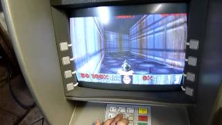
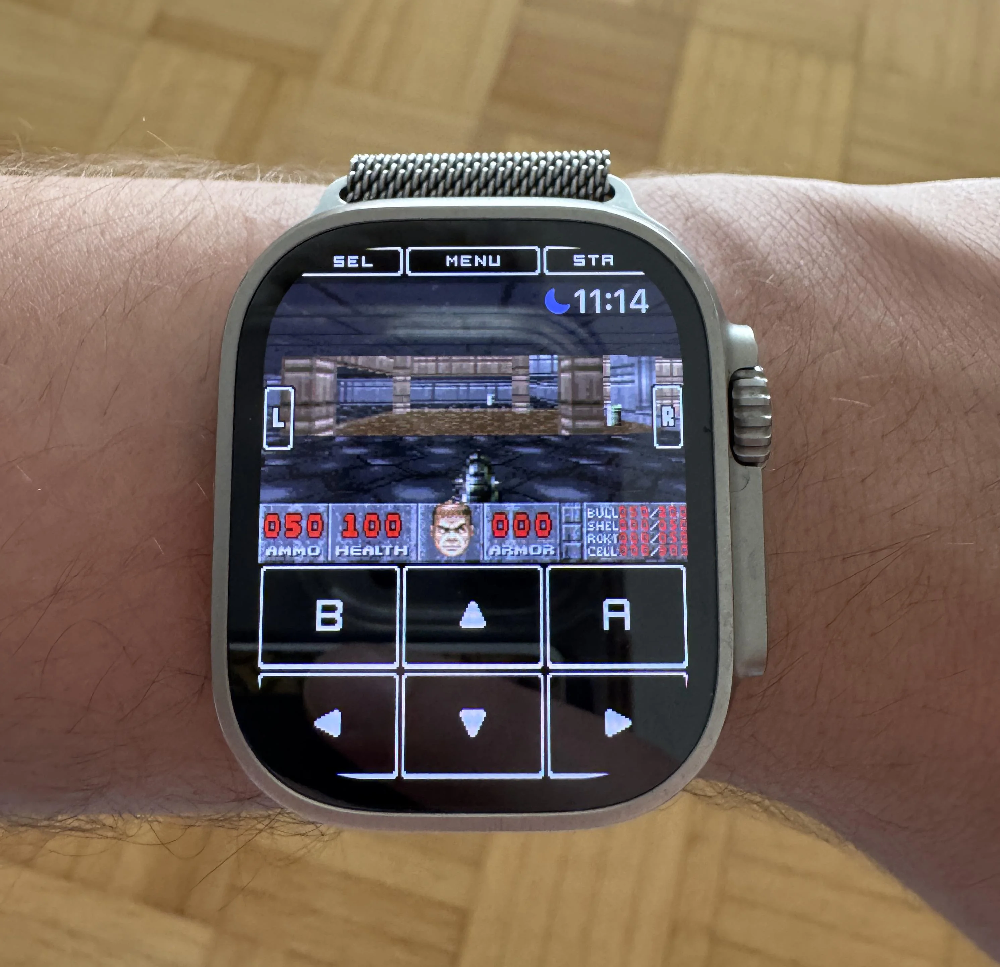
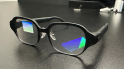

Analizamos la viabilidad de ejecutar DOOM en OTROS DISPOSITIVOS menos convencionales según su hardware, disponibilidad de ports y facilidad de uso.

Los cajeros automáticos (ATM) pueden correr el clásico videojuego Doom porque, en su interior, son esencialmente computadoras estándar que funcionan con sistemas operativos comunes como Windows XP, ETC.

Un reloj inteligente es un reloj de pulsera dotado con funcionalidades que van más allá de las de uno convencional. Los actuales pueden ejecutar Doom. Doom tiene bajos requisitos, su código es abierto, y está escrito en lenguaje C, lo que permite adaptarlo fácilmente a casi cualquier procesador.

Unos lentes inteligentes pueden ejecutar Doom porque, en esencia, son computadoras portátiles en miniatura que contienen procesadores y sistemas operativos. Como el Doom original de 1993 es muy ligero, cualquier dispositivo con pantalla y un chip básico puede emularlo o modificarlo para jugarlo.